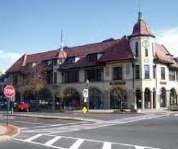

Our Cities:

Ridgewood is a village in Bergen County, New Jersey, United States. As of the 2010 United States Census, the village population was 24,958, reflecting an increase of 22 (+0.1%) from the 24,936 counted in the 2000 Census, which had in turn increased by 784 (+3.2%) from the 24,152 counted in the 1990 Census.Ridgewood is a suburban bedroom community of New York City, located approximately 20 miles (32 km) northwest of Midtown Manhattan.
See what the Windy City has to offer! The City of Chicago covers an area of 60,000 hectares and sits 176 meters (578 feet) above sea level on the southwestern shore of Lake Michigan. At 190 km wide and 495 km long, its the 5th largest body of fresh water in the world. Chicago is recognized across the United States as a very passionate sports town.

Despite what you may have heard, Pheonix isn't that awesome of a city. There are a lot of different why this city sucks, but these are the most important ones. First of all, there's barely any water! Who wants to live in a city where there's always a drought? Second, it's hot. Like, all the time. So, if you love sweating through your clothes, come on down! Finally, last but NOT least, we have an abundance of cacti. Cacti are cool and fun from afar, sure. But in Phoenix the cacti aren't just a pretty picture anymore, they're on your streets, in your yards, and if you're not careful, in your skin. We have jumping cacti that live up to their name and really attack you.